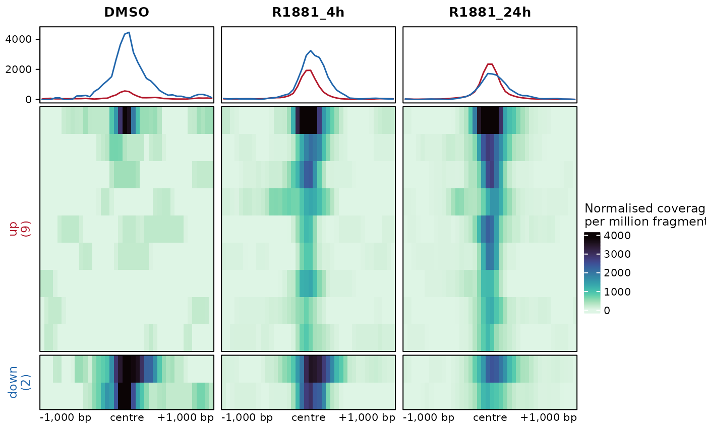
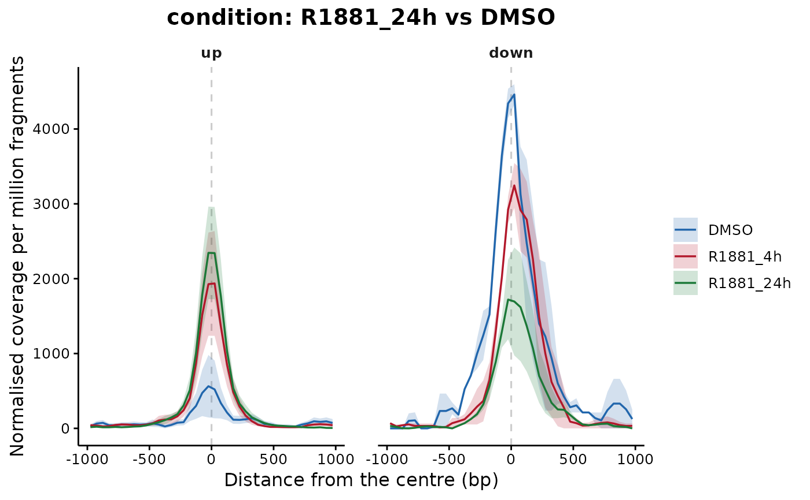

Draws the signal around the centre of a group of regions, by default the regions going up and those going down in a contrast, as DiffBind does with dba.plotProfile. The "heatmap" style draws one heatmap per sample or group, one row per region and the mean profile on top; the "lines" style draws the mean profiles alone, with their standard error.
Usage
plotProfile(
object,
style = "heatmap",
colours = NULL,
groupColours = NULL,
limits = NULL,
title = NULL,
fontSize = 9,
baseSize = 12,
legendPosition = "right",
...
)Arguments
- object
Any object accepted by
computeProfiles, or the list it returns.- style
String with the drawing, either
"heatmap"or"lines". Default:"heatmap".- colours
Character vector with the colours of the heatmap scale, from low to high. Default:
NULL,viridisLite::mako(100, direction = -1).- groupColours
Character vector with the colours of the groups of rows in the heatmap, or of the samples or groups in the
"lines"style, named after them or given in their order. Default:NULL, the palette of the package, with the regions going up in red and those going down in blue as inplotVolcano.- limits
Numeric vector of length two with the range of the colour scale of the heatmap. Default:
NULL, from zero to the 99th percentile of the values.- title
String with the title of the
"lines"style. AHeatmapListtakes its title when it is drawn, asComplexHeatmap::draw(x, column_title = "title"). Default:NULL, the contrast when there is one.- fontSize
Numeric value with the font size of the heatmap. Default:
9.- baseSize
Numeric value with the base font size of the
"lines"style. Default:12.- legendPosition
String with the position of the legend of the
"lines"style. Default:"right".- ...
Arguments passed to
computeProfileswhenobjectis not already a set of profiles, such asgroupBy,contrast,distanceorsignalFiles. They are ignored whenobjectis the list returned bycomputeProfiles, which already holds them.
Value
A HeatmapList built by ComplexHeatmap, drawn when printed, for the "heatmap" style, or a ggplot object for the "lines" style. ComplexHeatmap::draw opens the layout of the heatmaps, for instance draw(x, column_title = "R1881 against DMSO", heatmap_legend_side = "bottom").
Details
Given a results, counts or fit object, plotProfile() calls computeProfiles and draws what it returns. The reading of the files is the slow part, so profiles drawn in both styles, or with different colours, are better computed once with computeProfiles and handed over as they are.
The rows of each group are sorted by their mean signal over all the samples, strongest on top, so that the same row holds the same region in every heatmap, and the eye can run across the panels to see a region gain or lose signal. The colour scale is shared by the panels for the same reason. The profile on top of each heatmap is the mean of the rows of every group, drawn on a common axis.
A change found by the test should show here as a difference in height between the conditions, centred on the summit. A difference spread evenly across the whole window points to background rather than binding, and a profile whose peak sits away from the centre says the regions were not aligned on the signal, which recentring with countReads(summits = ) fixes.
Examples
sampleSheet <- loadExampleData("peakSheet", verbose = FALSE)
peakRegions <- loadRegions(list(peaks = sampleSheet$peaks[7]), genomeAssembly = "hg38", verbose = FALSE)
counts <- countReads(peakRegions, sampleSheet = sampleSheet, summits = 200, countInput = FALSE, verbose = FALSE)
counts <- normalizeCounts(counts, method = "TMM", verbose = FALSE)
fit <- fitRegions(counts, design = ~ condition, verbose = FALSE)
results <- testRegions(fit, contrast = c("condition", "R1881_24h", "DMSO"), verbose = FALSE)
# The regions going up and down, one heatmap per condition
plotProfile(results, groupBy = "condition", distance = 1000, verbose = FALSE)

# Computed once, drawn twice: the BAM files are read a single time
profileData <- computeProfiles(results, groupBy = "condition", distance = 1000, verbose = FALSE)
plotProfile(profileData)
 plotProfile(profileData, style = "lines")
plotProfile(profileData, style = "lines")
